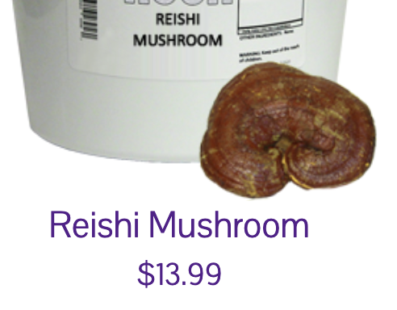
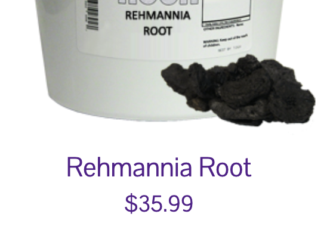

FOOD
FOOD
I will list out the most important overlooked foods.
The first is the Organic Reishi Mushroom. This mushroom is also known as the “mushroom of immortality” and is widely considered the most important mushroom in the entire world. Its history goes back centuries.
The main benefits of the reishi come from the glucans. The glucans enhance our body by getting rid of defective cells. You can cook these in hot water and even make a tea of them.

The next key food is the Rehmannia herb. This herb cleanses the blood system of impurities. It helps support your organs.
The process of eating this herb is a little different from your typical herbs. This one requires you to prepare it ahead of time. The preparation process allows you to consume the entire root if desired.

Chamomile is a well-known tea. It has many positive attributes, and studies have shown that chamomile drinkers live longer than non-drinkers.
The same study found that mostly women drank chamomile. There was not much evidence that the tea helped men. This might be because the men in the study were found to be drinking and smoking heavily during the process. So, if you are a man, then you probably will want to drink it anyway.
These products can be purchased from the store linked on the main page.